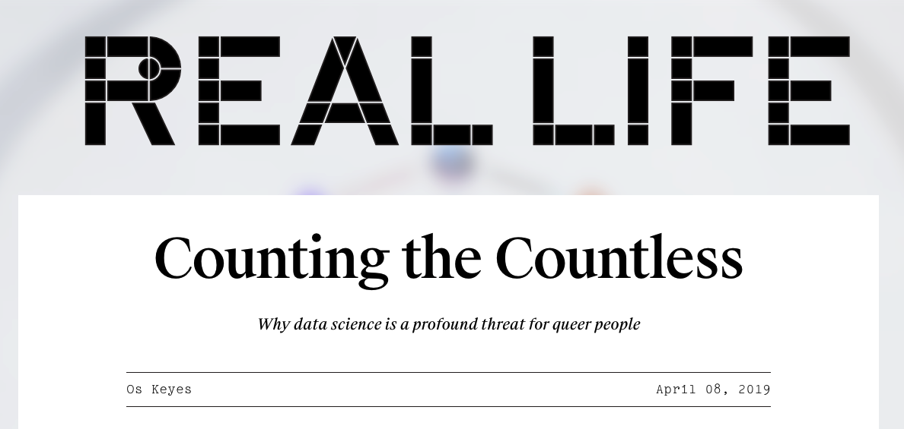

Counting the Countless
Is data science compatible with queerness?

keyes2019counting
Keyes (2019)
Title: Counting the Countless. {2019}.
Authors: Os Keyes
Key words: Data Ethics, Data Science.
In “Counting the Countless” (2019), Os Keyes argues that data science poses a significant threat to queer people because it does not allow for the autonomy, contextuality and fluidity that can both define queerness and keep queer people safe. Keyes asserts this point by describing how “data violence” is inflicted upon individuals by reducing complex human traits (like race and gender) down to something that can be counted and used for decision making; they do this through an analogy to administrative violence, which already suppresses and allows the targeting of the poor, immigrants and people of colour. The author aims to convince the reader that data science is inherently reductive, harmful and incompatible with queerness by criticising current attempts at reform and arguing that further, better surveillance serves only to “make violent systems more efficiently violent”. Keyes is addressing queer or otherwise minoritised people who are interested in or work in data science and acknowledges that “people need to eat to survive” so each individual must “make the decision that is right for [their] ethics of care”.